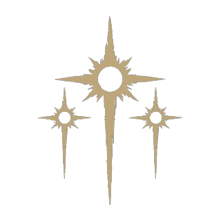
Proposta de personagem não-vivo para o servidor de Red Dead Redamption 2 - Gehenna
"Sua missão é fria e cirúrgica: enquanto o mundo se perde em intrigas vulgares, você descerá aos porões para arrancar a verdade da carne podre e decifrar os segredos do osso antes que os traidores de Veneza apaguem o nosso legado." - Sisto
??????????????
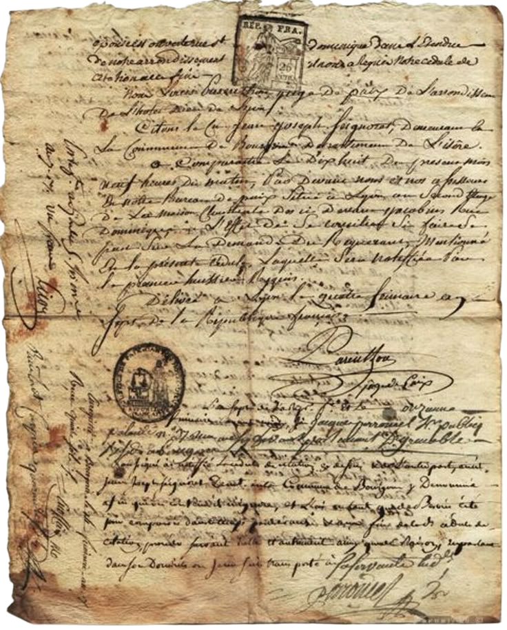
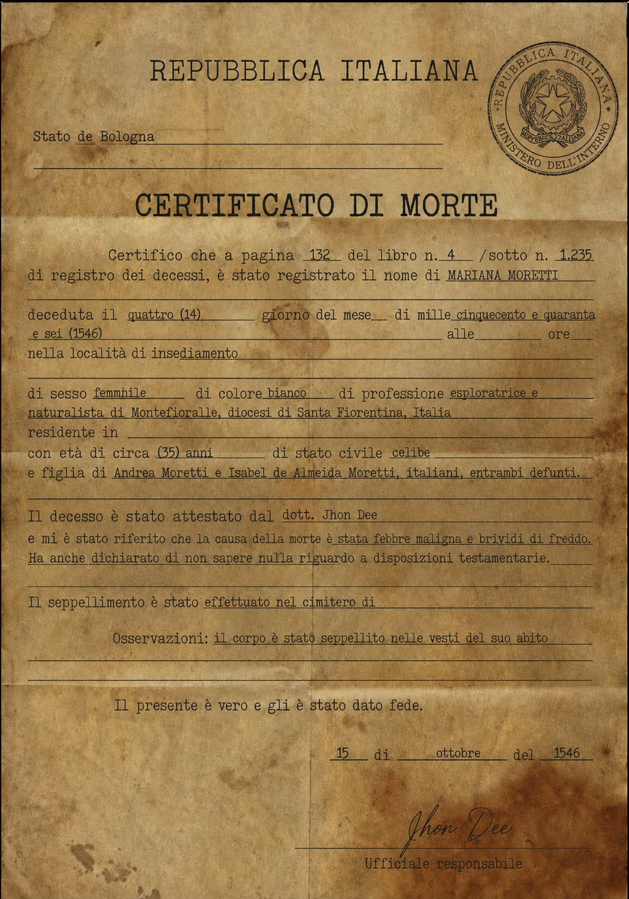
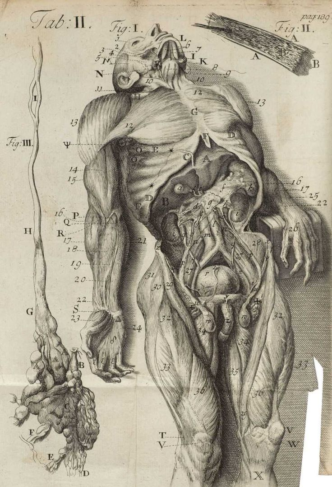
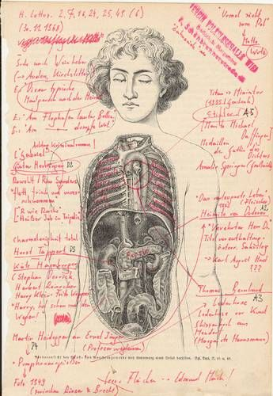
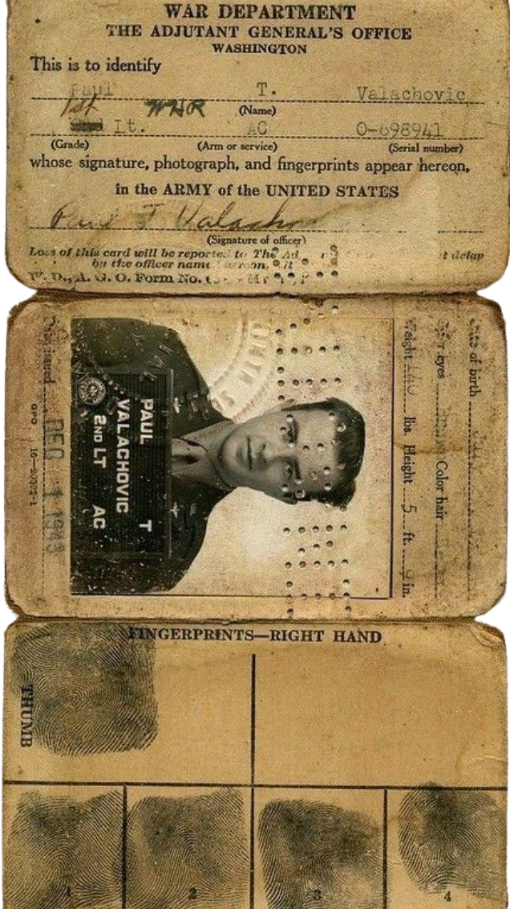
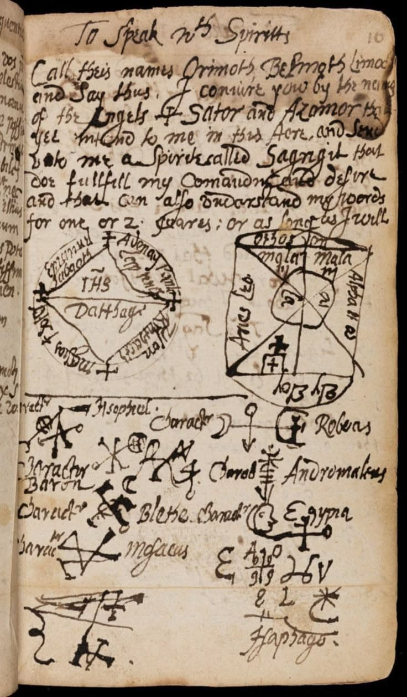
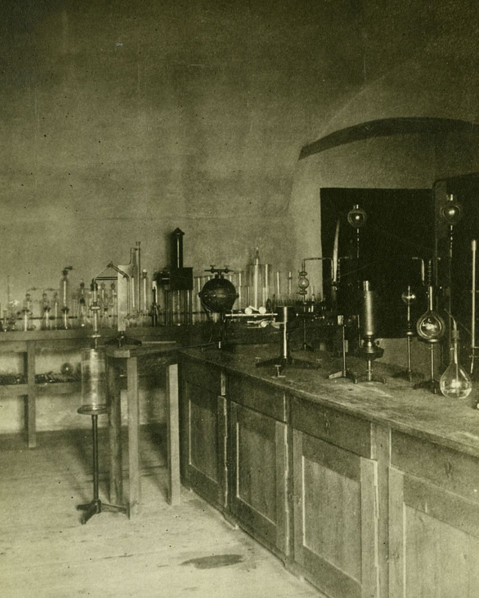
Laboratório de Jhon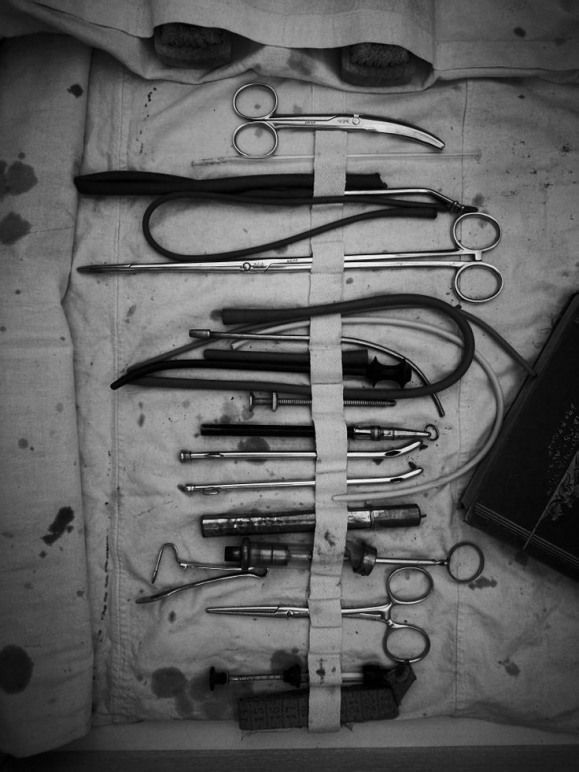
Mesa de estudos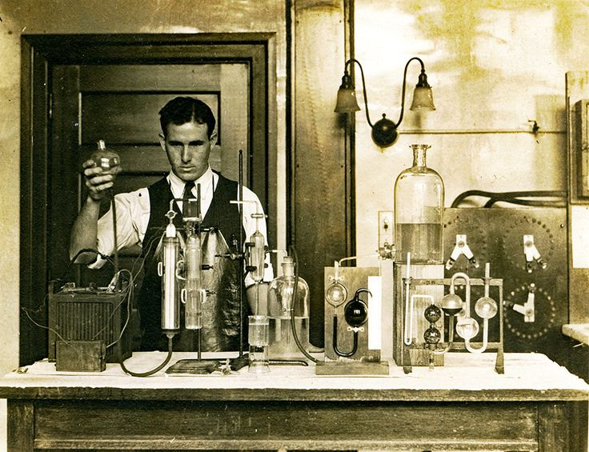
Uma das poucas fotos que Jhon aparece em seu trabalho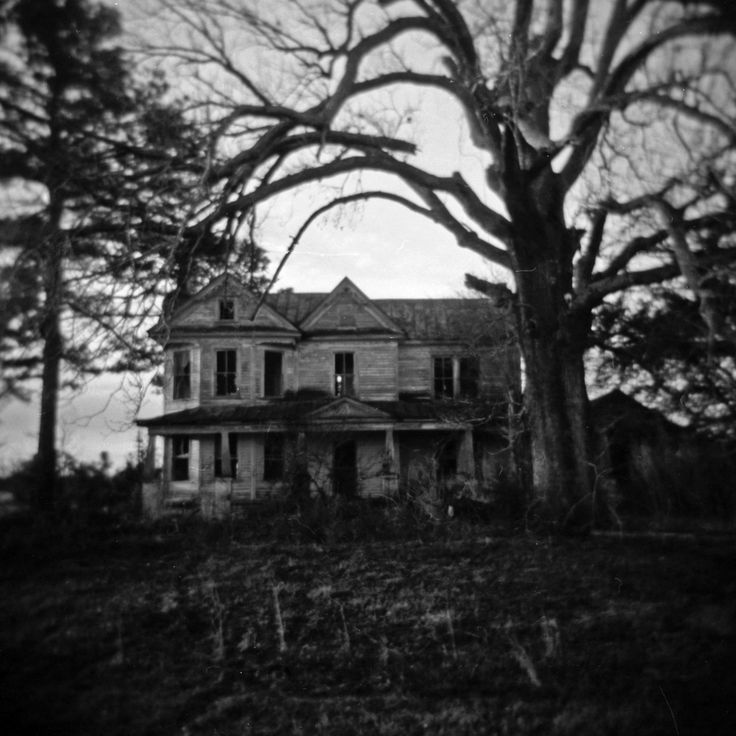
Antiga casa de Jhon em Bologna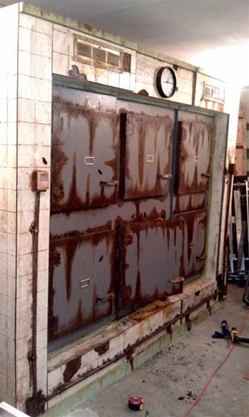
Necrotério do hospital de Bologna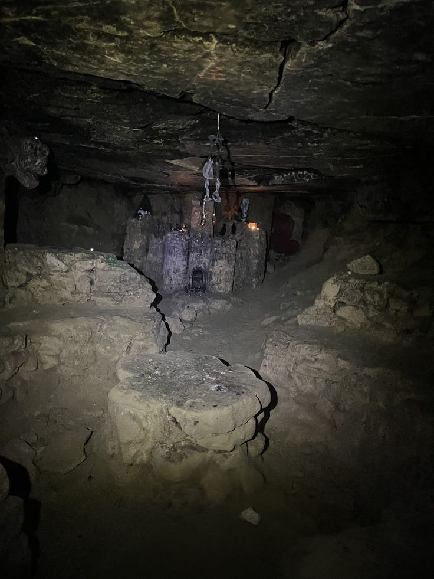
Gruta onde Jhon ficou trancado por SistoA infância de Jhon Dee foi moldada por duas forças silenciosas e opostas em sua casa. Seu pai, um médico respeitado na comunidade de Bolonha, era uma figura de autoridade inabalável. Ele carregava consigo o cheiro de vinagre, ferro e lavanda; os desinfetantes da época e um olhar cansado de quem travava uma batalha diária contra a mortalidade. Para o jovem Jhon, o pai não era apenas um homem, mas um herói que detinha as chaves do corpo humano. Jhon desejava desesperadamente esse mesmo respeito, essa mesma aura de controle sobre a vida.
Sua mãe, por outro lado, era a própria definição de calor e abnegação. Uma dona de casa devotada que mantinha a estrutura do lar impecável para que o marido pudesse exercer a medicina sem distrações. Ela via em Jhon o mesmo brilho obstinado do pai e fazia tudo ao seu alcance para apoiá-lo: costurava suas túnicas de estudo, garantia que houvesse caldo quente nas noites frias de leitura e protegia o silêncio de seu quarto. Para agradar ao pai e honrar os sacrifícios da mãe, Jhon sabia que só havia um caminho: a prestigiada Universidade de Pádua. Pádua, situada a algumas horas de Bolonha, era o coração pulsante da revolução médica no século XVI. Foi lá que Jhon viveu seus anos mais formativos, mas também onde as sementes de sua monomania foram plantadas.
Em 1543, durante seu terceiro ano de estudos, Jhon testemunhou uma demonstração que mudaria sua vida para sempre. O teatro anatômico de Pádua estava superlotado. No centro, sob a luz de velas, um renomado professor realizava a dissecação pública de um criminoso executado na mesma manhã. Enquanto a maioria dos estudantes desviava o olhar ou cobria o nariz com lenços embebidos em cânfora, Jhon Dee empurrou os colegas para chegar à primeira fileira. Ele não viu apenas carne e tendões; ele viu um mapa. O que o fascinou não foi a mecânica de como o homem funcionava, mas o mistério do que havia acabado de deixá-lo. Onde estava a faísca que movia aqueles músculos segundos antes da forca? Foi em Pádua que ele começou a realizar suas primeiras dissecações clandestinas de pequenos animais, tentando isolar o exato sopro da vida. Ele se formou com honras máximas, carregando na bagagem um diploma de doutor, mas também uma mente irremediavelmente fragmentada pela curiosidade mórbida.
Cap. II
Ao retornar para Bolonha em 1546, Jhon encontrou um cenário profissional extremamente favorável. Graças ao nome respeitável de seu pai e às suas credenciais impecáveis de Pádua, ele foi rapidamente contratado como Médico Legista e Anatomista da Magistratura de Bolonha. As autoridades da cidade precisavam de um olhar clínico para desvendar assassinatos misteriosos, envenenamentos e mortes súbitas que assolavam os becos bolonheses. Esse cargo deu a Jhon algo que poucos homens na Europa tinham: acesso irrestrito e legalizado a cadáveres frescos. Ele passava os dias examinando os corpos de criminosos executados, vítimas de crimes passionais e andarilhos sem nome.
Cap. III
O que começou como dever profissional rapidamente se transformou em uma obsessão patológica (monomania). Jhon percebeu que as horas do expediente no necrotério municipal não eram suficientes para suas perguntas. Ele precisava de mais tempo. Ele precisava de silêncio. Ele convenceu seus pais a deixarem-no usar o porão da casa da família sob o pretexto de "preparar remédios e estudar casos complexos para a corte". Ali, Jhon construiu seu santuário profano.
Cap. IV
No ano de 1550, a cidade de Bolonha transformou-se em um cenário de desolação absoluta, onde a terrível peste cinzenta superlotou os hospitais e os necrotérios locais. Para Jhon Dee, dividido entre as obrigações exaustivas do trabalho e sua obsessão particular, a única válvula de escape era um pequeno recanto nos fundos de sua casa, local onde ele tirava um momento sagrado do dia para fumar e arejar a mente. Foi justamente ali que um fenômeno bizarro começou a acontecer, com corpos aleatórios surgindo de forma esporádica e misteriosa na terra úmida de seu quintal. Em vez de pânico, a mente monomaníaca de Jhon encontrou uma lógica puramente pragmática e fria, pensando que, como o número de mortos na cidade era absurdamente grande, ninguém daria falta daqueles indivíduos e não haveria problemas em recolhê-los. Secretamente, ele arrastava as formas inertes para o porão para dar continuidade aos seus estudos anatômicos.Com o passar do tempo, Jhon percebeu que todos os corpos trazidos pelo desconhecido seguiam um padrão cirúrgico bizarro, completamente desprovidos de fluidos e sangue residual. O mistério se aprofundou quando anotações sigilosas começaram a surgir de forma inexplicável nas margens de seus livros e cadernos de anatomia. Escritas em um latim arcaico e impecável, as notas traziam correções cirúrgicas cada vez mais específicas, profundas e certeiras sobre os corpos que ele dissecava. A confrontação definitiva aconteceu em uma madrugada silenciosa, no momento em que Jhon subia as escadas do porão e ouviu o som nítido de uma de suas ferramentas metálicas caindo ao chão de pedra. Ao retornar imediatamente para o laboratório, ele deparou-se com uma figura esguia e incrivelmente pálida, de órbitas profundas, vestindo o hábito cinzento de um monge franciscano enquanto mexia com precisão sobrenatural em um dos cadáveres. Em vez de fugir, Jhon ficou completamente estático, observando o intruso de longe, fixo e em estado de choque, mas sem esboçar qualquer reação aparente de medo. O homem então cessou o trabalho e o chamou para perto, revelando-se como Fra' Sisto, um ancião sobrevivente do Clã Capadócio.
Dali para a frente, praticamente todas as noites, Fra' Sisto aparecia no laboratório subterrâneo, onde os dois passavam horas e horas conversando e desenvolvendo debates teológicos, filosóficos e anatômicos extremamente profundos sobre os mistérios da pós-morte. O principal motivo de Fra' Sisto ter se apegado tão intensamente a Jhon foi o fato de ter se enxergado perfeitamente no jovem anatomista. O ancião identificou em Jhon a mesma fixação inabalável pela ciência da mortalidade, o respeito técnico e quase religioso pelo destino do corpo e uma mente fria e analítica capaz de encarar o sobrenatural com lógica. Sem que fizesse ideia do plano maior, Jhon Dee estudava os mortos enquanto conhecia intimamente o seu próprio e inevitável futuro eterno.
Cap. V
O processo que transformou Jhon Dee em um herdeiro da morte foi longo e impiedoso, estendendo-se por quase um ano de provações silenciosas. Durante esse período, Fra' Sisto assumiu o papel de um tutor implacável, moldando a mente já obsessiva do anatomista para que ele compreendesse não apenas a mecânica da carne, mas a própria essência do fim. Sisto ensinou Jhon a decifrar a linguagem do silêncio absoluto e a encarar a transição biológica com uma frieza espiritual. Como parte desse treinamento mórbido, o monge trancava Jhon dentro de criptas esquecidas por dias inteiros, deixando-o na escuridão total com o cheiro da decomposição, para que seus sentidos humanos se acostumassem com a quietude do sepulcro. Eles também passavam os dias caminhando por cemitérios isolados, engajados em conversas profundas e discussões filosóficas exaustivas sobre o propósito da alma, até que a data do sacrifício final finalmente se aproximou. No dia 1 de julho de 1551, a teoria transformou-se em uma experiência visceral e aterrorizante: Jhon foi enterrado vivo por Fra' Sisto. Passou dois dias confinado sob palmos de terra úmida, experimentando a claustrofobia sufocante e o esgotamento lento do oxigênio. Naquela escuridão sepulcral, a mente de Jhon flutuou entre o delírio e a lucidez, sentindo seu corpo mortal falhar progressivamente. No terceiro dia, já à beira da morte e com os batimentos cardíacos quase imperceptíveis, ele foi desenterrado pelas mãos frias de seu senhor e carregado de volta para o laboratório clandestino.
Era o dia 3 de julho de 1551 quando o ritual do Abraço teve seu ápice na frieza daquela mesa de pedra. Fra' Sisto abriu as artérias principais de Jhon, fazendo com que seu sangue vital escorresse como uma cascata contínua sobre o mármore. A dor inicial foi dilacerante, uma queimação gelada que parecia rasgar sua própria humanidade. À medida que o fluido o deixava, a visão de Jhon começou a falhar, os contornos do laboratório tornaram-se borrões cinzentos e a luz das velas pareceu se apagar em uma névoa densa. No entanto, no momento em que o frio extremo assumiu o controle e a morte se tornou iminente, algo extraordinário aconteceu: o medo pânico que costuma assolar os moribundos simplesmente sumiu. Uma calmaria matemática e absoluta preencheu o vazio de sua mente exangue; a transição não era mais um horror, mas a resposta para a equação que ele buscou por toda a vida. Nos seus últimos instantes de sôfrega vitalidade, quando o último sopro de calor humano estava prestes a abandonar seus lábios, Fra' Sisto cortou o próprio punho e o pressionou firmemente contra a boca ressecada de Jhon. O sangue ancestral e espesso de Caim invadiu sua garganta. Naquele milésimo de segundo, o coração mortal de Jhon deu uma única pancada, pesada e violenta contra as costelas, ecoando no silêncio de seu peito antes de se calar para sempre. Houve uma pressão súbita e dolorosa em sua cavidade torácica; seus pulmões, operando por um reflexo biológico desesperado e involuntário, tentaram expandir para buscar o ar uma última vez, mas o mecanismo falhou, congelando o peito em uma imobilidade estática.
De forma lenta e pesada, a consciência de Jhon começou a emergir daquele abismo gélido. Seus novos sentidos, agora aguçados pela maldição, registraram a penumbra com uma nitidez cirúrgica. Ao abrir os olhos pálidos, ele avistou Fra' Sisto sentado por perto em um banco pequeno de madeira, observando-o com seu olhar profundo. Com a garganta rígida e as cordas vocais ainda sem o calor da vida, Jhon conseguiu expelir apenas um sussurro quebrado: "Sis...". O monge não esboçou sorriso ou alento, limitando-se a proferir uma única e cortante frase: "Você não recebeu a vida eterna. Recebeu a eternidade para compreender a morte". Aquelas palavras ecoaram pelo laboratório, deixando perfeitamente claro que o Abraço não representava um renascimento glorioso ou uma cura mística, mas sim um estado intermediário e maldito onde Jhon já não pertencia aos vivos, mas também não descansaria com os mortos. Essa revelação fria serviu como sua primeira e mais importante lição sobre a verdadeira natureza da imortalidade Capadócia.
Cap. VI
O ano de preparação que antecedeu o Abraço não foi apenas um período de intensos estudos intelectuais, mas um teste de resistência psicológica profundamente cruel e devastador. Enquanto Fra' Sisto submetia Jhon Dee a rituais de isolamento e conversas profundas sobre a finitude, o destino desferiu um golpe violento e inesperado contra o lar do anatomista. Numa noite de tempestade em Bolonha, enquanto Jhon estava absorto em seus delírios científicos no subsolo, seus pais retornavam de uma visita médica tardia quando a carruagem em que viajavam sofreu um acidente catastrófico nas ladeiras de paralelepípedos escorregadios. O veículo tombou violentamente, quebrando-se contra as paredes de pedra da via pública. Seu pai morreu instantaneamente devido ao impacto, e sua mãe, gravemente ferida e agonizante, foi resgatada e trazida de volta para casa por vizinhos antes que as autoridades pudessem intervir. Jhon foi arrancado de seu laboratório clandestino para encontrar sua mãe dando os últimos suspiros no andar de cima. Diante da tragédia repentina, a Besta em potencial e o cientista colidiram dentro de sua mente. Fra' Sisto surgiu das sombras do corredor antes mesmo que o corpo de sua mãe esfriasse. O monge pálido proibiu Jhon de chamar a guarda ou relatar o acidente oficialmente, alegando que os trâmites legais e a inevitável inspeção da propriedade revelariam o porão repleto de cadáveres roubados, destruindo o sigilo de sua grande obra antes do tempo. Foi nesse momento que o verdadeiro fardo da casa da morte se abateu sobre os ombros de Jhon.
Sisto exigiu que Jhon Dee utilizasse seus conhecimentos legistas para ocultar o ocorrido. O jovem precisou carregar os corpos de seus próprios pais para as profundezas do porão e, sob o olhar severo e analítico do monge, realizar o procedimento gélido de embalsamamento e preservação de seus próprios criadores. Para o mundo exterior, Jhon inventou a história de que seus pais haviam partido às pressas para uma propriedade isolada no campo para tratar da saúde. Viver, respirar e dar continuidade aos seus estudos anatômicos durante os meses restantes daquele ano, habitando uma casa completamente silenciosa onde os únicos companheiros eram seu mestre imortal e as formas perfeitamente preservadas e sem vida de seus pais, foi o verdadeiro crisol de Jhon. Essa tragédia repentina, friamente explorada por Sisto, obliterou os últimos resquícios de sentimentalismo humano em Jhon, provando ao Capadócio que a mente de seu pupilo possuía a rigidez matemática necessária para suportar a eternidade do clã.
Cap. VII
Após o estopim de sua transformação em 1551, Jhon Dee experimentou dramas biológicos e existenciais que os tratados médicos de Pádua jamais poderiam prever. O primeiro e mais persistente tormento foi a adaptação à sua própria fraqueza de clã. Ver sua pele perder completamente o viço, tornando-se rígida, fria e assumindo a tonalidade acinzentada e perene de um defunto recente, foi um choque terrível para o homem que antes orgulhava-se de sua postura profissional. Ele tentava, sem sucesso, usar maquiagens teatrais e pomadas aquecidas para simular o fluxo sanguíneo, mas o Sangue de Caim em suas veias recusava-se a imitar a vida, rejeitando qualquer tentativa de vaidade humana.
Outro grande drama foi a transição moral. Como médico, o juramento de Jhon era preservar a integridade do corpo humano; como vampiro, sua sobrevivência dependia da violação sistemática desse mesmo corpo. Nas primeiras décadas de sua não-vida, a Besta interior clamava por violência, empurrando-o para caçadas predatórias que resultavam em mortes caóticas nos becos escuros da Europa. Para não enlouquecer e se perder no próprio horror, Jhon precisou abandonar as noções tradicionais de Humanidade e abraçar o rígido e filosófico Caminho dos Ossos, uma das Trilhas de Sabedoria do V20. Ele passou a enxergar o ato de alimentar-se não como um crime ou um prazer sádico, mas como uma necessidade científica e uma oportunidade de estudar o limiar da dor e do desmaio em suas vítimas, transformando o horror da caçada em um procedimento clínico estrito.
Cap. VIII
A jornada de Jhon Dee cruzou os séculos em um estado de paranoia constante, sempre fugindo da rede de espionagem e influência financeira que o Clã Giovanni tecia pelo continente. No entanto, sua mudança radical para a cidade de Prado, no inverno de 1890, não foi uma fuga desesperada, mas sim uma missão de resgate de proporções históricas para a sua linhagem oculta. Através de seus contatos ocultistas e do monitoramento de correspondências criptografadas da alta sociedade, Jhon descobriu que a expansão industrial em Prado havia violado terrenos sagrados. Durante as escavações para a construção da grande linha ferroviária e do complexo subterrâneo da cidade, os operários mortais haviam rompido as paredes de uma antiga cripta medieval esquecida. Relatórios confidenciais indicavam que o local continha sarcófagos com inscrições idênticas às que Fra' Sisto possuía em seus pergaminhos sagrados: símbolos de Láçaro, o patrono dos Capadócios. O perigo era iminente, pois um grupo de arqueólogos financiados secretamente por uma subsidiária bancária de Veneza, uma clara fachada dos Giovanni que estava a caminho de Prado para assumir o controle do sítio de escavação e confiscar os artefatos, cinzas e conhecimentos contidos na cripta. Jhon Dee compreendeu que se os necromantes venezianos pusessem as mãos naqueles segredos, os últimos vestígios do legado de seu clã seriam destruídos para sempre. Por esse motivo, ele utilizou sua fortuna acumulada e suas credenciais médicas falsas para se estabelecer em Prado em 1890 de forma imediata. Infiltrando-se como consultor do comitê de patrimônio e patologista forense da cidade, Jhon conseguiu acesso prioritário aos túneis subterrâneos. Sua missão em Prado, iniciada naquela década, era um jogo de xadrez contra o tempo: ele precisava mapear a cripta, extrair as relíquias e decifrar os segredos de seus antepassados mortos antes que os agentes de Veneza percebessem que um Capadócio autêntico estava operando bem debaixo de seus narizes vitorianos.
Cap. IX
Ainda que Jhon Dee e seu senhor, Fra' Sisto, tivessem escolhido caminhar à margem das grandes facções de Caim, permanecendo como autônomos e inteiramente independentes, Jhon não ignorava a geopolítica dos Amaldiçoados. Durante seu longo aprendizado, Sisto havia lhe dissecado minuciosamente a natureza das duas maiores forças da Noite: a Camarilla, com sua burocracia milenar e obsessão em mimetizar os mortais, e o Sabá, com seu fanatismo religioso e monstruosidade escancarada. Quando Jhon desembarcou em Prado, no ano de 1890, sua mente analítica imediatamente captou a forte e estruturada presença da Camarilla na cidade. Ele compreendeu, com a lucidez de um legista, que um cadáver solitário não sobrevive por muito tempo em terra alheia, e que tentar operar como um eremita absoluto no coração de Prado seria um convite à própria destruição, especialmente sob a constante ameaça do Clã Giovanni. A perspectiva de Jhon em relação à Camarilla é desprovida de qualquer paixão ideológica ou lealdade feudal. Para ele, a seita não passa de uma grandiosa conveniência arquitetada por anciões temerosos. Ele observa com um sarcasmo silencioso os Ventrue e Toreador debaterem etiqueta no Elysium ou se desesperarem para manter suas aparências humanas, algo que a sua própria Trilha de Sabedoria, o Caminho dos Ossos, já superou há séculos. Jhon enxerga o Sabá como uma horda caótica de bárbaros que destroem os próprios corpos e almas que ele tanto deseja estudar; portanto, a previsibilidade e a ordem da Camarilla são muito mais atraentes para um cientista. Ele não vê a seita como um governo legítimo, mas sim como uma blindagem social perfeita. A lei da Mascarada, defendida de forma tão implacável pela Torre, serve perfeitamente aos propósitos de Jhon, pois mantém os mortais cegos e os outros vampiros ocupados demais com suas próprias intrigas para repararem no recluso patologista de pele fria e acinzentada.
Cap. X
Sabendo que precisaria interagir com a Camarilla local para garantir sua estada em Prado, Jhon Dee traçou objetivos estritamente transacionais e defensivos. O seu primeiro e mais urgente plano ao chegar na cidade foi estabelecer-se sob um disfarce político inofensivo. Ele se apresenta perante os oficiais do Príncipe de Prado como um Caitiff um vampiro sem clã e sem linhagem interessado apenas em erudição e medicina. Ao camuflar seu sangue Capadócio sob o estigma de um "sangue-sujo", ele desvia qualquer suspeita sobre sua verdadeira identidade, já que a Camarilla acredita que os membros de sua estirpe foram completamente dizimados séculos atrás. Seu objetivo principal é usar essa fachada de insignificância política para comprar o que ele mais valoriza: o isolamento e o tempo necessários para pesquisar a cripta medieval subterrânea. Para garantir que a Camarilla o deixe em paz em seus porões, Jhon transformou seu trabalho no necrotério municipal de Prado em uma ferramenta de barganha indispensável. Sempre que um membro da seita comete um deslize na caçada e deixa um rastro de sangue que ameaça a Mascarada, o Dr. Jhon Dee entra em ação para limpar a sujeira dos mortos-vivos. Ele falsifica laudos médicos, mascara marcas de presas como surtos da peste e emite certidões de óbito convenientes para a polícia mortal. Ao se tornar o legista de confiança da corte, ele adquire uma imunidade informal; o Príncipe e os Primigênies sabem que precisam de seus serviços anatômicos para manter a cidade segura, e em troca, fecham os olhos para as suas excentricidades, sua total falta de calor humano e a ausência de pulsação. O objetivo final e mais ambicioso de Jhon Dee em relação à Camarilla é transformá-la em sua primeira linha de defesa contra Veneza. Ciente de que os Giovanni avançam seus tentáculos comerciais e bancários em Prado a passos largos, Jhon manipula as informações que chegam à corte. Sem nunca revelar que está protegendo uma relíquia Capadócia, ele alimenta a paranoia territorial do Príncipe, pintando a expansão financeira dos Giovanni como uma tentativa disfarçada de invasão política e quebra da soberania da Camarilla na cidade. Dessa forma, Jhon Dee faz com que os exércitos e xerifes da própria Camarilla lutem a sua guerra de sobrevivência e barrem os necromantes venezianos, permitindo que ele permaneça nas sombras, intocado e focado em decifrar os mistérios da eternidade.
A quem encontrar estas páginas perdidas nas sombras do tempo, saiba que a caligrafia que aqui repousa relata a jornada daquele que o mundo dos vivos conheceu apenas como um humilde monge franciscano, mas cuja verdadeira essência pertence à orgulhosa e gélida estirpe de Láçaro. Chamo-me Fra' Sisto do Santo Sepulcro, um ancião de Sétima Geração do Clã Capadócio puro, guardião dos mistérios mais profundos que a carne mortal tanto teme encarar. Em meus dias sob a luz do sol, dediquei minha mortalidade à erudição claustral e ao estudo das relíquias sagradas nas terras do Oriente Médio, onde meu espírito se fascinou pela sutil transição da alma e pela arquitetura divina do fim, antes que um mestre da morte me concedesse o Abraço e me confiasse as chaves das catacumbas da Europa. Por séculos, atuei como um cronista silencioso dos Amaldiçoados, registrando a história com o desapego cirúrgico de quem sabe que a carne é efêmera. No entanto, o verdadeiro teste de minha imortalidade manifestou-se na fatídica noite de 1444, quando a perfídia e a ganância da família Giovanni banharam nossa linhagem em sangue. Vi meus irmãos serem consumidos e nossos templos de conhecimento reduzidos a cinzas pelos necromantes de Veneza, mas ordenei a mim mesmo sobreviver, adotando como camuflagem perpétua o hábito cinzento de minha antiga ordem e ocultando os manuscritos originais de Láçaro sob os altares da própria Igreja, enganando os usurpadores por mais de um século de um exílio paranoico e invisível.
Minha solidão secular e o fardo de carregar o fim de um clã encontraram um propósito definitivo no inverno de 1550, quando a peste cinzenta assolou a cidade de Bolonha e me conduziu ao laboratório subterrâneo clandestino de um jovem mortal chamado Jhon Dee. Na penumbra daquele porão, observei o jovem anatomista operar os mortos com uma fixação inabalável, um respeito quase religioso pelo destino do corpo e uma mente fria e analítica que espelhava perfeitamente minha própria juventude mortal. Percebendo que o tempo de minha linhagem escorria, submeti Jhon a um escrutínio impiedoso durante um ano completo, testando sua resiliência mental e assistindo de perto como sua razão permanecia intacta mesmo quando o destino arrancou seus pais de forma repentina em um acidente de carruagem, forçando-o a carregar o fardo de embalsamá-los em segredo sob meu comando. Quando finalmente abri suas artérias no dia 3 de julho de 1551 e pressioneui meu punho contra seus lábios moribundos, gravei em sua nova consciência a primeira e mais importante lição de nossa estirpe, lembrando-lhe de que eu não estava lhe concedendo a vida eterna, mas sim a eternidade para compreender a morte. Deixo este diário como um testemunho de que, embora os traidores de Veneza acreditem ter apagado as pegadas dos filhos de Láçaro, minha obra e o legado metodológico da morte permanecem rigorosamente vivos, protegidos pela mente cirúrgica do meu único herdeiro nas sombras do mundo.